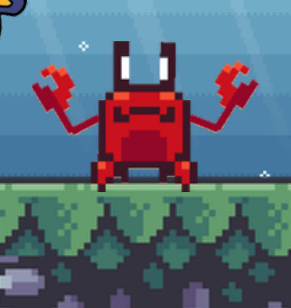

KRUB
Peleas frenéticas entre amigos, al estilo de Duck Game, pero con cangrejos. Lo presenté con un stand en Indie Games TRS, en Terrassa, y la gente se picó desde la primera partida.
- Estado: en desarrollo
- Modo: peleas locales entre amigos